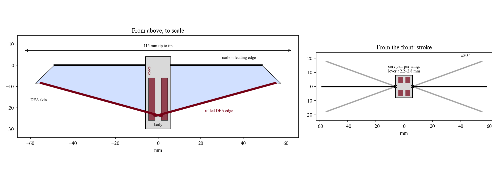
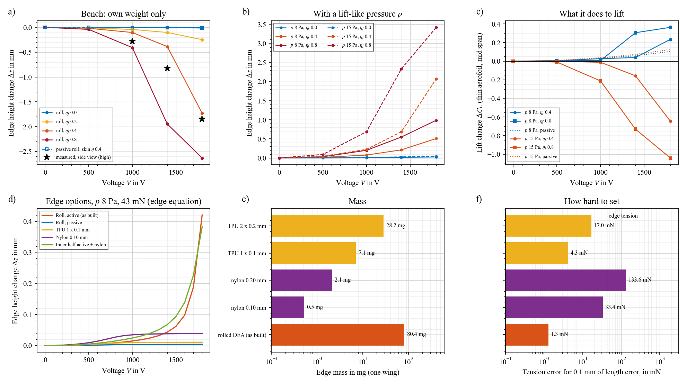
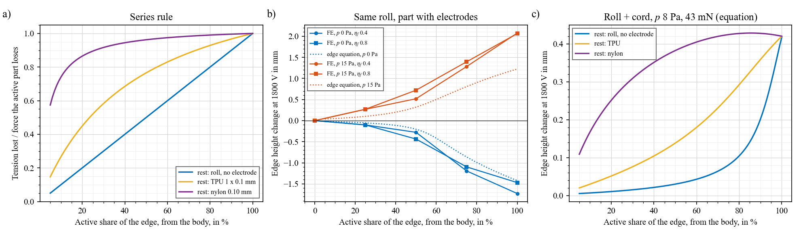
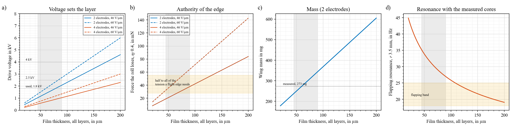
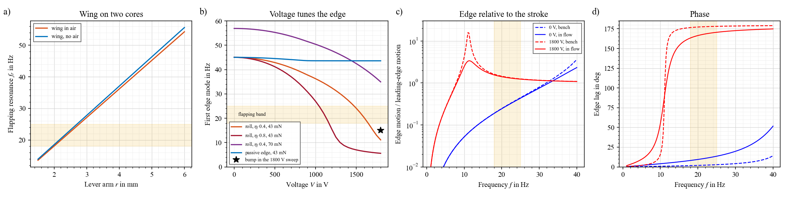
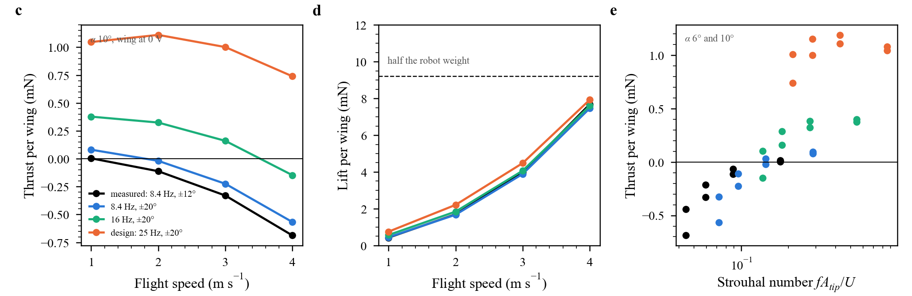
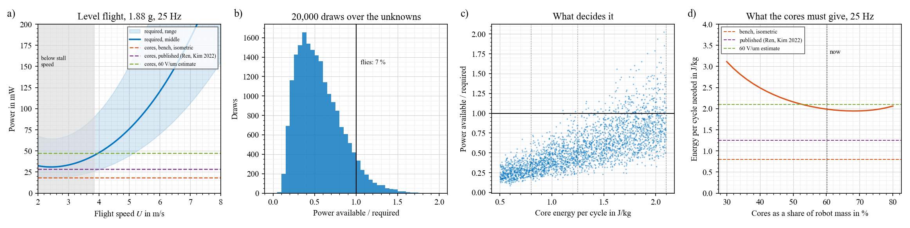

The design of the B-cube robot, its specification and how it was built, with answers to six design questions. Design values come from the measured parts; where the built robot has now been tested, the measured value stands next to the design value. Main figures and conclusions: Results; data: Experiments.
In short
Nylon or TPU instead of the rolled DEA edge? Not if you want the edge to move, and the roll is also how the electrodes are contacted. On the bench, a passive edge gives almost nothing, even with a strong skin: the motion comes from the roll losing tension. In flow the skin alone does change lift (Wing in air). A nylon or TPU cord is 10–150× lighter and holds tension better, so it is the right choice for a passive wing.
Only part of the edge active? Yes, with a stiff passive rest. Tension is the same along a string, so an active part near the body with nylon outboard gives about 90 % of the full edge's motion, at about a third of the edge mass. With the rest still rolled film, it falls to about the active share or less.
What it does to lift: it depends on the load. At 8 Pa, voltage adds lift ($\Delta C_L$ +0.2 to +0.4, the skin bulges). At 15 Pa, the edge rises so much that it removes lift (−0.6 to −1.0). The mean load of this robot is about 10 Pa, right between. Steady model, untested in flow.
Thickness: each layer is set by the voltage: $H \le V/E$, so 30–39 µm at 1.8 kV. In total, about 45–90 µm. Thinner, the roll cannot slacken a flight edge. Thicker, the wing passes 350 mg and the flapping resonance drops below the band with these cores.
Resonance: designed for 20–25 Hz with a lever of 2.2–2.8 mm; measured 8.4 Hz (7.7–9 Hz depending on amplitude), with a damping ratio of 0.07 (Q about 7 in still air). At the 2.5 mm design lever that means a spring-to-inertia ratio about 7× below the model. Voltage pulls the edge's own mode from about 45 Hz down to 11–27 Hz at 1.4–1.8 kV.
Can it fly? Not as built. At the measured kinematics (8.4 Hz, ±12°) the flapping wing makes no thrust above 2 m/s: -0.69 mN per wing at 4 m/s, against +0.74 mN at the design point (25 Hz, ±20°). Thrust needs a Strouhal number above about 0.15, so at 4 m/s about 16 Hz or more. Even at the design point, level flight needs 46–48 mW and two cores give 18–28 mW: it needs about 2 J/kg per cycle from the cores. A tethered robot is feasible.
Specification

Item
Value
Range
Span, tip to tip
115 mm
M + A body 12 mm
Wing area, each
9.4 cm²
M, outline
Wing mass, each
273 mg
235–345 mg for 45–90 µm film
M
Of which: skin, roll, leading edge, rest
62, 80, 23, 108 mg
rest = cables, glue, contacts
M total; split A at 60 µm
Cores
2 × 565 mg, 20 mm long
M
Frame, transmission
150 + 50 mg
100–250 mg frame
A
Robot
1.88 g, 18.4 mN
1.8–2.0 g
Flight speed
4 m/s
3.4–4.2 m/s best in the draws; stall 3.9 m/s at $C_{L,max}$ 1.1
Lift coefficient needed, 4 m/s
1.0
High for this Reynolds number (about 6,000)
Flapping
25 Hz, ±20° (design)
measured: 8.4 Hz resonance, 24° peak to peak at 1200 V
Strouhal 0.19 at 4 m/s (design), 0.05 (measured)
Lever arm on the cores
2.5 mm (design)
2.2–2.8 mm for 20–25 Hz in the model
measured resonance 8.4 Hz
Core strain at ±20°
±4.4 %
±3.8–4.9 %
Quality factor of the stroke
2 in flight (model)
measured 7 in still air (damping ratio 0.07)
M, free decays
Edge tension at 0 V
40–70 mN
needs ≥ 55 mN to hold 0.5 mm at 8 Pa
F
Edge mode
45 Hz at 0 V
11–27 Hz at 1.4–1.8 kV
Edge equation; bench bump at 15 Hz
Drive
1.8 kV, one channel per wing
robot tested at 1.0–1.4 kV
DEA force lag
38–52 ms (robot), 50 ms (wing)
in the elastomer's force, not the electrodes; voltage is a slow trim at 25 Hz
F
Power, level flight
46–48 mW
about 20–90 mW
Model
Power from two cores, 25 Hz, 80 % transmission
18 / 28 / 48 mW
at 0.8 / 1.25 / 2.1 J/kg
M / P / A
Available / required
0.51 median
0.21–1.06 (5–95 %)
7 % of draws ≥ 1
Steps
Done: masks, wings (2 electrodes), rolled cores, transmission, assembly; the wing on the bench in three views (1000–1800 V, 1–20 Hz, two tensions); the robot flapping (1000–1400 V, 1–15 Hz, side, diagonal and front views). Next, in order:
Raise the resonance towards 20 Hz: shorter lever, stiffer spring core, lighter wing root (cables and glue are 108 mg near the root). Pluck at 0 V after each change.
Powered against unpowered wing, interleaved: one session, one camera, wing on and off every 10 s at a fixed frequency, then a sweep in both states. Log the drive with an LED in view.
Find the stroke limit at 1400 V (end stop, transmission or core strain): 8 Hz at 1200, 1300, 1400 V, side view.
Measure the lag: electrode resistance end to end; current or blocked force at 1–20 Hz.
Measure $\eta_f$ and the film: roll force drop at 1800 V; weigh a cut piece of film of known area.
Tethered flapping on a force sensor, then a static wind tunnel at 4 m/s, 6° and 10°, 0 V and 1800 V in random order.
Nylon or TPU instead of the rolled DEA edge?
I read this as the trailing edge, where the roll is now. The leading edge must stay carbon: it carries bending from the stroke and from the skin, and a nylon or TPU strip bends by millimetres under those loads (beam table on the Flittermouse page, archived).

Equation: the edge holds its load with two springs in parallel, the edge string and the skin behind it: $\Delta z = q_e / (8T/L^2 + N/c)$, with $q_e$ the load per length on the edge, $T$ the edge tension, $L$ its length, $N$ the skin tension across it and $c$ the strip of skin that holds it. At 0 V the string is about 13× stiffer than the skin. When $T$ falls to zero, only the skin holds the edge, and the motion jumps.
Trend, bench (a): finite elements with weight, built outline. A passive roll does nothing, with the skin at $\eta$ 0.15 or 0.4: 0.01–0.02 mm. The active roll gives 1.7 mm ($\eta_f$ 0.4) to 2.6 mm (0.8) at 1800 V. Measured: 1.84 mm.
Trend, with lift (b): the edge now rises. At 15 Pa, by 2.1 mm ($\eta_f$ 0.4) and 3.4 mm (0.8). A passive edge: 0.04 mm.
Trend, options (d): with the same skin and 43 mN of edge tension, at 8 Pa: active roll 0.42 mm, nylon 0.04, TPU 0.01, passive roll 0.004. So a cord keeps the edge still. Nylon moves a little because a stiff cord is held by length: when the skin relaxes, the edge straightens and the cord loses tension (70 to 47 mN in the equation).
Mass (e): roll 80 mg per wing, TPU 1 × 0.1 mm 7 mg, nylon 0.10 mm 0.5 mg. A cord saves 73–80 mg per wing, about 8 % of the robot.
Setting the tension (f): 0.1 mm of length error moves the tension by 1.3 mN for the roll, 4 mN for thin TPU, 33 mN for 0.10 mm nylon. Nylon must be tensioned by a spring or a weight, not by length. TPU creeps, so its tension falls over hours; nylon creeps far less.
So: keep the active roll if voltage should move the edge. Use nylon, with a set force, for a passive wing or for the outer part of a part-active edge. TPU sits between, with creep as its cost.
Validate: one wing with the roll replaced by 0.10 mm nylon at 40–70 mN, same videos as the bench set. Prediction: less than 0.1 mm at 1800 V.
Limits: nylon and TPU did not settle in the finite elements (a stiff cord on a soft skin), so their numbers come from the edge equation, fitted on the 40 roll curves that did (below).
Only part of the edge active?

Equation: two springs in series, length fixed by the anchor: $\Delta T = \Delta F\, k_p / (k_a + k_p)$, with $k_a = EA_a/(aL)$ for the active share $a$ and $k_p = EA_p/((1-a)L)$ for the rest. Tension is the same all along a string, so it does not matter where along the edge the active part sits.
Trend (a): with the rest as unpowered roll, the tension change is just the active share, $\Delta T = a\,\Delta F$. With nylon, $k_p \gg k_a$ and the whole $\Delta F$ arrives even from a short active part: 86 % at 20 % active.
Trend (b), finite elements: same roll, electrodes only near the body. At 1800 V, 25 % active gives 0.1 mm on the bench and 0.27 at 15 Pa; 50 % gives 0.3–0.4 and 0.5–0.7; 75 % gives 1.1–1.2 and 1.3–1.4 mm. Full edge: 1.5–1.7 and 2.1 mm.
Trend (c): active roll near the body with nylon outboard keeps about 90 % of the motion at 50 % active (0.38 against 0.42 mm). It saves about 40 mg per wing and keeps the high voltage near the body, where the cables are short.
Catch: a stiff rest makes tension depend on length to 0.1 mm, so set it with a spring. The edge equation has not been checked for roll + nylon in the finite elements.
Validate: cut the roll at half span and tie nylon from the cut to the tip, set to the same tension. Same videos as the bench set.
What it does to lift
Equation: thin aerofoil on the mid-span chord shape from the finite elements: $\Delta C_L = 2\int_0^\pi \frac{dz}{dx}(\cos\theta - 1)\,d\theta$, with $x = \tfrac c2(1-\cos\theta)$. An edge that rises lowers lift ($-2\pi\,\Delta z_{TE}/c$). A bulge in the middle raises it ($+4\pi\, h/c$ for a parabola).
Trend (R_edge c): at 8 Pa, voltage adds lift: +0.24 ($\eta_f$ 0.4) and +0.36 (0.8) at 1800 V. At 15 Pa, it removes lift: −0.64 and −1.04. A passive edge adds +0.10 to +0.13 at both loads, from the skin alone.
Why: under lift, a slack edge rises with the skin. Small rise: the bulge wins. Large rise: the wing washes out, like a flap going up.
For the robot: mean load is about 10 Pa (18.4 mN on 18.8 cm²), peaks on the downstroke higher. So voltage may add lift at low load and dump it at high load. That could be a control (lift dump, or roll control from one wing), but not the steady camber gain the old page assumed.
Limits: uniform pressure stands in for the air load, one chord, no flow separation. These are bounds on the sign, not lift numbers.
Validate: the static wind tunnel step. Side view at 4 m/s, 6° and 10°, 0 V and 1800 V. Rising edge with voltage means lift falls.
How thick can the wing be?

Equation: stack $0.5D + E + D + \dots + 0.5D$, so one layer is $H = t/(n+1)$ for $n$ active layers and total $t$. Voltage $V = E_f H$. The roll loses $\Delta F = \eta_f\, n_f\, \varepsilon E_f^2 H\, w_a$; the skin loses $\Delta N = \eta\, n\, \varepsilon E_f^2 H$. Wing mass grows as $\rho\, t\,(S + w_s L_{roll})$, about 2.4 mg per µm.
Layer, from voltage (a): $H \le V/E_f$. At 1.8 kV: 30 µm at 60 V/µm, 39 µm at 46 V/µm. More layers at the same total thickness lower the voltage, not the authority.
Minimum, from authority (b): to hold 0.5 mm at 8 Pa the edge needs about 55 mN. For the roll to remove half or more of that at $\eta_f$ 0.4, the film must be at least about 40 µm at 60 V/µm, or 65 µm at 46 V/µm. At a fixed field, $\Delta F$ depends only on total thickness, so 2 and 4 electrodes overlap.
Maximum, from mass and resonance (c, d): 90 µm gives 344 mg per wing, 120 µm gives 415. With these cores, the resonance at 3.5 mm falls from 32 Hz (60 µm) to 27 (90) and 24 (120). The lever can follow, but every 10 µm adds 48 mg to the robot, 2.6 % of its mass, for a robot already short of power.
So: 45–90 µm in total, layers of 30–39 µm at 1.8 kV. 4 electrodes at 90 µm (three 22 µm layers in the skin) keep the authority of 90 µm at 1.4 kV.
Check the film now: 273 mg minus 23 mg of leading edge leaves 250 mg. At 60 µm the film is only 142 mg, leaving 108 mg of cables and glue. At 87 µm it would be about 206 mg. Weigh a cut piece.
Resonance: what the wing and the cores do

Measured: the built robot resonates at 8.4 Hz (sweep fit), with free decays at 8.0–9 Hz depending on amplitude and a damping ratio of 0.07 (Experiments). Q is about 7 in still air, against 2 expected in flight, where the air takes more power.
Model against measurement: at the 2.5 mm design lever the model gives 22.8 Hz. The measured resonance and the 1 Hz stroke together say that, at that lever, the moving inertia is 7.4 times the wing's and the cores lose 214 mN at 1.2 kV ($\eta_c$ 0.21); with the wing alone moving, the lever would be about 1 mm. The built lever arm decides which (Models).
Equation, stroke: $f_r = \frac{1}{2\pi}\sqrt{2 k r^2 / (I_w + I_{air})}$. Core stiffness $k = 2C_1(1+2\lambda^{-3})\,A/L$ with $A = m/(\rho L)$: 276 N/m for a 565 mg, 20 mm core at 10 % stretch. Wing $I_w$ = 1.6×10⁻⁷ kg m² from the measured masses, air adds 5 %.
Trend (a): 20 Hz at $r$ 2.2 mm, 25 Hz at 2.8 mm. The roll is 30 % of the wing mass but about half its inertia, since cables and glue sit near the root. A nylon edge would raise $f_r$ by about 40 %, so the lever would shrink to keep 25 Hz.
Quality factor: $Q = 2\pi\,\tfrac12 I\omega^2\Phi^2 / (P_{air}/f)$ = 2 at 25 Hz, ±20°, 20 mW per wing. Resonance gives about 2× the quasi-static stroke, and a band of about ±25 %, so it is forgiving.
Equation, edge: $f_e = \frac{1}{2\pi}\sqrt{\big(T(\pi/L)^2 + N/c\big)/(\mu_e + \rho t c/3)}$. Voltage lowers $T$, so it lowers $f_e$.
Trend (b): 45 Hz at 0 V. With $\eta_f$ 0.4 it is 27 Hz at 1400 V and 11 Hz at 1800 V; with 0.8, about 6 Hz. The bump in the 1800 V frequency sweep was at 15 Hz, which fits an edge that is nearly slack at voltage.
Trend (c, d): below its mode, the edge follows the stroke with a small lag (0 V: 0.2–0.45× the leading edge's motion, under 10° of lag). Above it, the edge nearly stays put in space and the wing pitches about it (1800 V: about 1.2–1.6×, 165–178° of lag). At 25 Hz and ±20° that is about 15° of twist at 0 V and about 35° at 1800 V.
What it means: voltage switches the wing between a stiff, following edge and a free, feathering edge, within the flapping band. Feathering is what flapping wings need for thrust. This may be the strongest effect of the active edge, and none of the steady lift numbers include it.
The cores: they set the stroke resonance, not the edge. Voltage on a core lowers its pull a little but not its stiffness much, so the stroke resonance should barely move with voltage. If skin and cores share a channel, the edge mode moves within each cycle, and the stroke resonance does not.
Validate: pluck the edge at 0 V and 1800 V (step 2). Then the transmission sweep, with and without the wing, for $f_r$ and $Q$.
Limits: one-mode edge, damping assumed (0.03 bench, 0.15 in flow), no coupling back to the stroke. The coupled model on the Flittermouse page gave edge swings of the same order (±7 mm).
Can it fly?

At the measured kinematics: the unsteady lattice (time model, Wing in air) at 8.4 Hz, ±12°, α 10°, wing at 0 V: thrust -0.11 mN per wing at 2 m/s and -0.69 mN at 4 m/s. At the design point, 25 Hz, ±20°: +0.74 mN at 4 m/s.
Trend (c): all runs fall on one curve against the Strouhal number $St = f A_{tip}/U$: thrust is positive above about 0.15. The robot as built is at 0.05 at 4 m/s.
Lift (b) barely depends on the flapping: 7.7 mN per wing at 4 m/s with the measured stroke, 7.9 at the design point. It comes from the forward speed; flapping has to pay for the drag.
So: frequency is the first gap, then energy per cycle (below). The numbers below are for the design point.

Equation, required: $P = (D_i + D_p + D_b)\,U/\eta_p$, with induced drag $D_i = W^2/(q\pi b^2 e)$, profile drag $D_p = q S C_{D0}\,\overline{(1+(V_f/U)^2)^{3/2}}$ including the flapping speed $V_f$, body $D_b = q\,(S C_D)_b$, and propulsive efficiency $\eta_p$. Lift must equal weight above stall: $U \ge \sqrt{2W/(\rho S C_{L,max})}$.
Equation, available: $P_{av} = 2\, m_c\, e\, f\, \eta_{tr}$, with energy per cycle $e$ per kg of core.
Trend (a): at 4 m/s, 48 mW: drag 1.0 mN induced, 1.6 profile, 1.0 body, at $\eta_p$ 0.3. Two cores give 18, 28 and 48 mW at 0.8, 1.25 and 2.1 J/kg. Only the highest touches the curve.
Trend (b, c): unknowns drawn uniformly over: energy 0.5–2.1 J/kg, transmission 60–90 %, 18–28 Hz, ±15–30°, $C_{D0}$ 0.05–0.12, $e$ 0.5–0.9, $\eta_p$ 0.2–0.4, $C_{L,max}$ 0.9–1.4, frame 100–250 mg. Median ratio 0.51, 7 % reach 1. Energy per cycle matters most (correlation 0.78), then $\eta_p$ (0.40).
Trend (d): with the cores at 60 % of the mass, as now, they need about 2.0 J/kg at 25 Hz. A heavier core does not help much: the minimum is about 1.95 J/kg near 70 %.
Cross-check: the unsteady lattice on the Flittermouse page gave 18–26 mW per wing at 4 m/s and 25 Hz, 36–52 mW for two, the same range.
So: as built, it cannot hold level flight. The gap is energy per cycle, not wing mass: a nylon edge saves 8 % of the mass and moves the median ratio by about the same. Electronics on board would widen the gap.
Tethered: yes. Power through the tether, on a force sensor or a whirl arm, needs no closure. That is the experiment to aim for.
Validate: core against a load at 25 Hz, integrate the force-displacement loop: the one number that decides free flight.
Edge equation, and how far to trust it
Equations: drop $\Delta z = q_e/(8T/L^2 + N/c)$, in-plane bow $s = N L^2/(8T)$, tension $T = T_0 - \Delta F + k_e\,\frac{8}{3L}(\Delta z^2 + s^2 - \dots_0)$, skin $N = N_0 - \Delta N + \frac{Et}{c}\,\frac{8}{3}(h/c)^2$, bulge $h = p\,c^2/(8N)$. The path-length terms are what hold a slack edge: it has to stretch to sag further.
Fitted: three constants on 160 points from 40 settled finite-element runs (roll, $\eta_f$ 0–0.8, 0–15 Pa, two pulls): $N_0$ 0.10 N/m (0.15–0.29 from the edge curvature), $c$ 5.9 mm (skin strip that holds the edge), load share 0.28. rms 0.21 mm, correlation 0.93.
Use: comparing edges (cords, part-active) where the finite elements do not settle, and the edge mode. Not absolute numbers.
Finite elements: the bench wing (first/fit_wing.py): built outline, one active skin layer, 23 mm roll with 20 mm active and 2 films, roll stretched by a 6 or 9 mm pull, wing weight from film density, uniform pressure 0–15 Pa. All 60 runs settled. Median edge tension 29 and 43 mN at 0 V.
Limits
One wing measured, voltages in ascending order, no air. $\eta_f$ 0.4–0.8 is what the weight model needs, not a measurement. Film thickness assumed.
Lift: uniform pressure, steady, one chord. Flight power: a drag build-up with assumed $C_{D0}$, $e$ and $\eta_p$, checked only against the lattice model.
Cores: stiffness from the $C_1$ fit and mass, not measured. Energy per cycle in a loaded 25 Hz cycle: not measured.
Edge dynamics: one mode, assumed damping, no flutter analysis. A centre of mass behind the leading edge is the classic flutter setup.
Code and data
In flap/robot/: params.py (every number and its source), edge_fe.py (60 finite-element runs), edge_theory.py (edge equation), calib_edge.py, robot_study.py (inertia, resonance, edge mode, thickness, flight, Monte Carlo), figures_robot.py. Data: data/edge_fe.jsonl, edge_calib.json, robot_study.json. Figures as SVG: robot, edge, part, thickness, resonance, flight. Copies in YEAR2/robot.